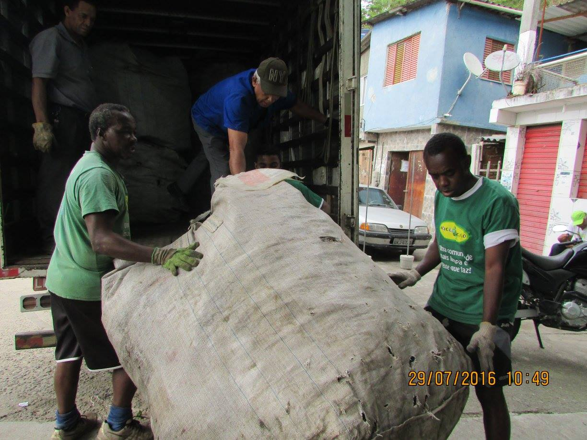
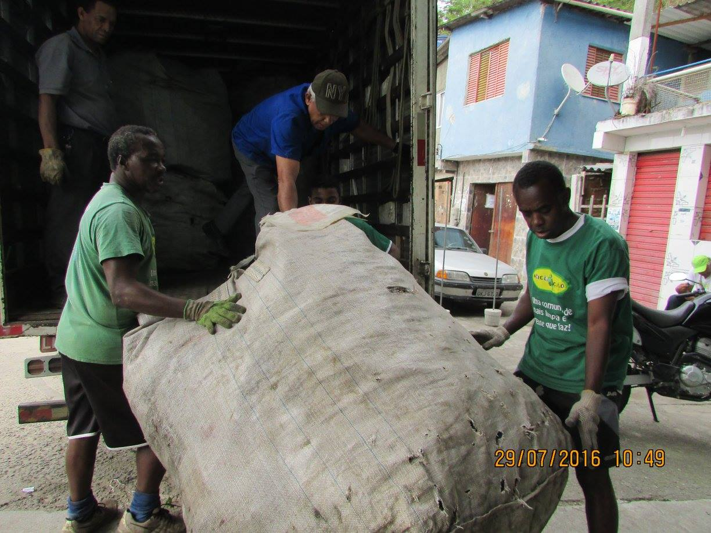

O Grupo PROA (Prevenção Realizada com Organização e Amor) iniciou suas atividades em abril de 1998, na Comunidade do Morro dos Prazeres, no bairro de Santa Teresa, Rio de Janeiro, quando um grupo de amigos decidiu convencer os moradores da importância de se protegerem contra doenças sexualmente transmissíveis (DSTs). Munidos de um caderno com fotos e informações sobre DSTs, começaram a distribuir preservativos e a realizar um trabalho de conscientização e educação sexual. O PROA estabeleceu uma parceria - que se fortalece a cada ano - com a Unidade de Saúde local a fim de difundir informações sobre seus programas sanitários.
Com mais de 18 anos de muito trabalho, o grupo segue inovando na busca de temas para os encontros, nas formas de aconselhamento e capacitação, além da participação em movimentos sociais a fim de fortalecer as parecerias para melhorar a vida dos moradores da comunidade.

 
